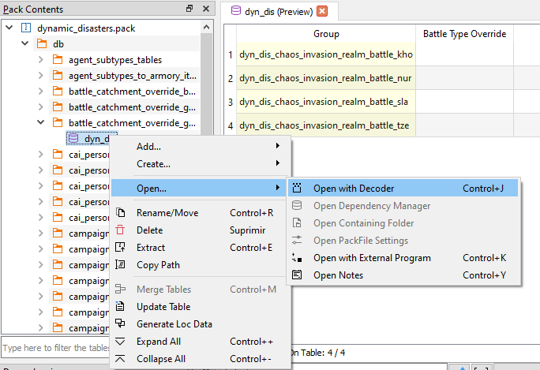

PackFile TreeView

That thing on the left with folders and stuff is the PackFile's TreeView. That's where all the files inside your PackFiles will show up. When you Right-Click on any of them, this context menu will show up:

These are the actions you can use to alter the PackFile. Each one of them has a hotkey, in case you're a lazy bastard. These are all the actions in the menu:
Add…/Add File: Allows you to add one or more files to the PackFile.Add…/Add Folder: Allows you to add a folder and all his files to the PackFile.Add…/Add from PackFile: Allows you to add files or folders from another PackFile to your PackFile. Just, select whatever you want to add, double click it and it'll be added to your PackFile, keeping his path.Create…/Create Folder: Allows you to create an empty folder. Due to how PackFiles work empty folders are not saved so, if you want to keep the folder, add a file to it.Create…/Create Loc: Allows you to create an empty Loc PackedFile.Create…/Create DB: Allows you to create an empty DB Table.Create…/Create Text: Allows you to create an empty text file. ANY TEXT FILE (including lua, xml,...).Create…/Mass-Import TSV: Allows you to import a bunch of TSV files at once. The system is able to distinguish between DB and Loc TSV files, so you can import all of them at the same time, and RPFM will create all the files needed, in their correct place.Create…/Mass-Export TSV: Allows you to export as TSV every DB Table and Loc PackedFiles in your PackFile at once.Open…/Open with Decoder: Allows you to open a table in theDB Decoder. Only used to decode new tables, so…. You shouldn't touch this.Open…/Open Dependency Manager: Allows you to open the list of dependencies included in the PackFile. Check the next chapter to learn what thisDependency Managerthing is about.Open…/Open with External Program: Allows you to open a PackedFile with an external program. Keep in mind that, if you modify the file, changes will NOT BE INCLUDED in the PackedFile itself, but in a file in the TMP folder of your system. If you want to conserve these changes, save that file somewhere, edit it and then add it back to the PackFile.Open…/Open in Multi-View: Allows you to open a PackFile in a "secondary view", so you can have up to two PackedFiles open side-by-side.Rename…/Rename Current: Allows you to rename whatever is selected, except the PackFile.Rename…/Apply Prefix to Selected: Allows you to apply a prefix to every file inside the selected folder.Rename…/Apply Prefix to All: Allows you to apply a prefix to every file in the PackFile.Delete: Allows you to delete whatever is selected. If the PackFile is selected, it removes every file from it.Extract: Allows you to extract whatever is selected out of the PackFile. If whatever you selected is compressed/encrypted, RPFM will decompress/decrypt it before extracting, so the resulting file is usable.Global Search: Allows you to perform a simple search across every DB Table or Loc PackedFile inside your PackFile, providing you with a filterable list of results.
Additionally, with the shortcuts Ctrl++ and Ctrl+- you can expand/collapse the entire TreeView. This action is shortcut only, it's not in the Contextual Menu.
Keep in mind that the availability of these actions depends on what is selected, and on the currently loaded schemas. For example, you can't add anything if you have selected a PackedFile. Also, keep in mind that if there is a MyMod loaded, some of these actions may work different.
Also, when you add/modify a file, it changes in the TreeView with the following colour code:
- Green/Dark Green : added file.
- Yellow/Dark Yellow : modified file.
- Magenta/Dark Magenta : added AND modified file.
This colour code is applied to the parents too, up to the PackFile, so you easily know what you changed since the last time you saved the PackFile.
And last, the TreeView Filter. It's that thing with buttons at the bottom of the TreeView. It allows you to filter the contents of the TreeView by a pattern (Works with Regex!). The buttons below the filter bar where you write the pattern are:
Auto-Expand Matches: automatically expand all the matched folders/files. This combined with a ton of matches (empty pattern and +60k files in data.pack) can hang the program for a while, so be cautious on when do you use it.AaI: the case sensitive button. Not too much to explain here.Filter By Folder: in case you want to find a folder and not a file (for example, searching a table) tick this. I'll show you the matched folder and all his contents.